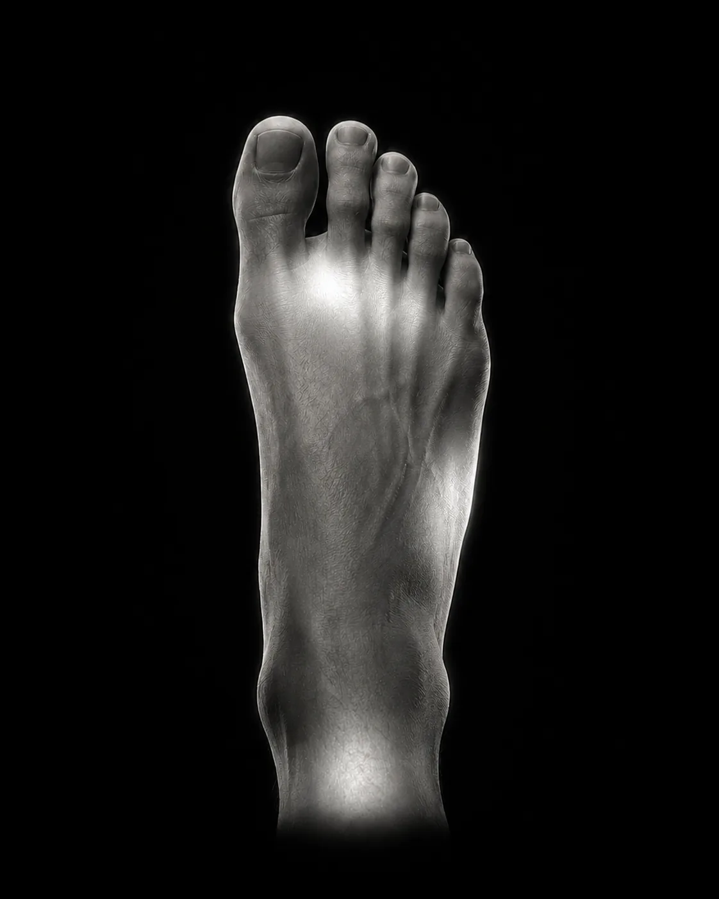

Featured Guide / Footwear Design
Why Toe Boxes Feel Tight & How Shoes Fit
Explore the physical mechanics of forefoot pressure, how shoe shape affects room across the toes, and why measuring foot width at home helps prevent sizing mistakes.
BadgerFit is a foot and footwear guidance platform built to understand fit and discomfort. When a shoe pinches or your feet ache, BadgerFit combines structured questions, saved personal history, and plain-language education to help you find practical next steps without guessing or sizing up blindly.
Early beta · Opens at sign-in · No camera scan required · Non-medical guidance
The Two Core Experiences
BadgerFit establishes clear boundaries between shoe-specific fit issues and broader foot discomfort. Both experiences receive equal prominence inside the platform so you always start where your discomfort begins.
"Something feels wrong with this pair."
Built for a specific pair of shoes in your rotation that pinches, slips, rubs, or feels uncomfortable during wear.

02 / Foot & Routine Path"My feet feel uncomfortable more generally."
Evaluates broader foot discomfort across daily routines, prolonged standing, and work environments—independent of any single shoe.
Simple Sequence
BadgerFit replaces unguided internet searches and blind sizing guesses with a transparent, structured assessment that respects the physics of shoes and feet.
Select Fit Check if troubleshooting a specific shoe in your rotation, or Foot Check if addressing daily standing fatigue and general foot soreness.
Describe location, sensations, footwear characteristics, and standing conditions through targeted prompts. No photo or camera scan needed.
Review your 5-part plan: clear observations, lowest-risk next steps, supportive tools, common pitfalls to avoid, and safety guidance.
Save the check to My Shoes or My Foot. Over time, recurring patterns across your rotation emerge in My Fit Preferences.
The Result Architecture
A BadgerFit result is built to be actionable immediately. Instead of assuming every dress shoe is narrow or that sizing up is always the cure, advice directly reflects your answers and footwear mechanics.
Plain-language analysis connecting your reported details to likely fit, footwear construction, or standing load factors.
A practical, lowest-risk starting step—such as an alternative lacing technique, sock pairing, or scheduled movement breaks.
Supportive fitting aids, non-medical cushion pads, shoe trees, or contextual recovery ideas that may assist your situation.
Common pitfalls—such as blindly sizing up, overtightening laces, or forcing painful break-ins—that exacerbate discomfort.
Clear safety guidance explaining when professional medical advice may be appropriate.
Saved History & Records
Fit decisions shouldn't start from scratch every time you wear or purchase shoes. BadgerFit organizes your checks into an ongoing personal record that connects your wardrobe, routine, and data privacy.
Save individual pairs in your rotation with brand, model, size, and category. Revisit the complete Fit Check history linked to each specific pair anytime.
Maintain an ongoing chronological record of Foot Check sessions to observe how comfort responds across changing work routines, standing demands, and footwear.
Re-read past check summaries anytime. Manage Data allows deletion of individual checks or shoes freely. Full beta account deletion is support-assisted via email.
Troubleshoot a specific shoe when rubbing or pressure occurs.
Checks are retained under My Shoes and My Foot as your closet grows.
BadgerFit summarizes consistent fit tendencies across your wardrobe.
"BadgerFit summarizes recurring patterns across your saved Fit Checks."
Forefoot pressure appeared in 3 saved checks.
Heel slipping appeared in 2 saved checks.
Pattern Note: Summarizes recurring patterns across saved checks. Helps spot common discomfort trends without measuring foot dimensions or providing medical advice.
Education & Understanding
Understanding why shoes fit or pinch shouldn't require an industry degree. BadgerFit embeds contextual learning directly into your checks, results, and guides.
Featured Guide / Footwear Design
Explore the physical mechanics of forefoot pressure, how shoe shape affects room across the toes, and why measuring foot width at home helps prevent sizing mistakes.
Understand technical footwear terms—such as "heel counter," "shoe last," and "throat line"—directly inside your check result without losing your place.
Learn how the physical parts of footwear—from the toe box and quarters to outsoles—shape internal room and structural fit.
Learn how foot width, instep height, and natural movement interact with different footwear silhouettes and shoe lasts.
Practical rules for trying on shoes and gentle mobility suggestions—such as calf stretches—to ease daily standing tension. Non-medical guidance.
Trust & Responsibility
BadgerFit provides educational fit guidance and everyday comfort suggestions. It does not diagnose medical conditions or replace clinical assessment.
If you experience sharp pain, persistent numbness, tingling, swelling, or symptoms that continue outside your shoes, BadgerFit directs you to seek assessment from an appropriate healthcare professional.
Foot Scan remains paused while the measurement approach is still being evaluated. The current BadgerFit beta functions completely without camera scanning.
BadgerFit operates without affiliate referral incentives or sponsored product placements. Guidance is designed strictly around the mechanics of your shoes and feet.
You can manage and delete individual checks or saved footwear profiles directly within the app. Full account deletion is support-assisted during beta by emailing support@thebadgerco.in.
Before You Start
Clear expectations for the BadgerFit beta, our current footwear focus, and how your data is handled.
The beta includes Fit Check for specific shoe discomfort, Foot Check for daily foot fatigue, saved history in My Shoes and My Foot, pattern summaries in My Fit Preferences, and our educational resources.
Our primary focus is dress shoes, dress boots, and everyday sneakers—the core rotation of professional life. Dedicated subtype guidance continues to expand.
No. BadgerFit relies on your reported observations, footwear details, and structured questions. No photo or camera scan is required.
No. BadgerFit provides educational fit guidance and everyday lifestyle suggestions. It does not diagnose clinical conditions or replace assessment by a healthcare professional.
You can manage and delete individual checks or saved footwear profiles directly within the app. Full account deletion is support-assisted during beta by emailing support@thebadgerco.in. See our privacy notice for details.
Start With Your Shoes
Whether a single pair is pinching your heel or long standing shifts are wearing down your arches, BadgerFit gives you a clear, structured next step.
BadgerFit offers educational fit and everyday comfort guidance, not a medical diagnosis.